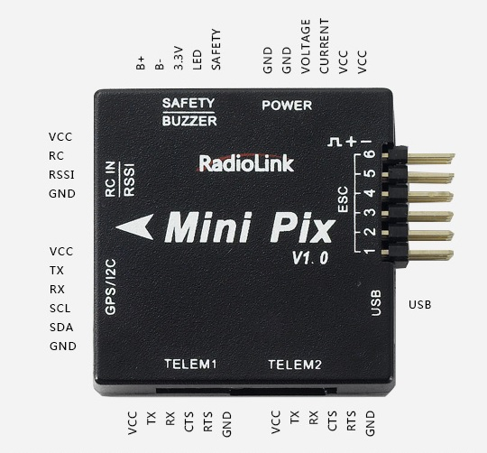
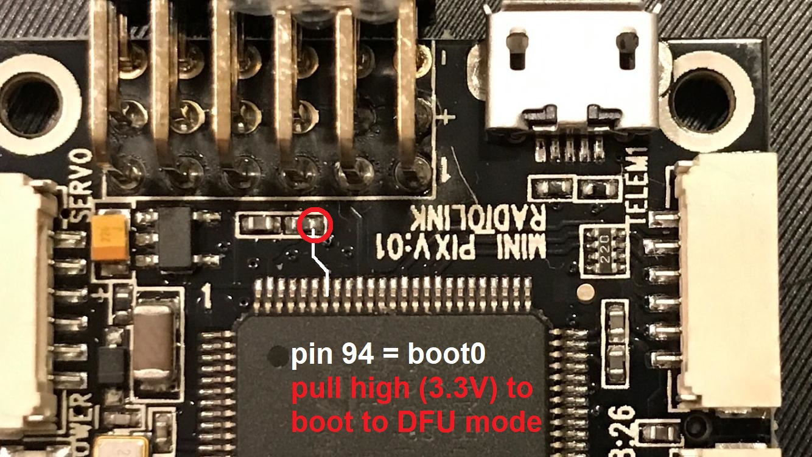

RadioLink MiniPix¶
Warning
This autopilot is not recommended because some versions of the board are not compatible with the official ArduPilot software despite multiple efforts to work with the manufacturer to make them compatible. The manufacturer is also apparently not abiding by the GPLv3 license which requires releasing the modified source code to its customers. “V1.0” and “V1.2” probably work, “V1.0 II” and “V1.1” definitely do not work.
Warning
The RadioLink CrossFlight is not supported by ArduPilot. As far as the ArduPilot Development Team is aware, RadioLink are in violation of ArduPilot’s GPLv3 license in that they refuse to release the source code for their modifications to ArduPilot. The Development Team recommend you do not purchase this product, and instead select from one of our many other supported boards.
{kind=link}
above image and some content courtesy of the RadioLink website
Specifications¶
Processor and Sensors
STM32F405VGT6 ARM microcontroller
InvenSense MPU6500
Compass QMC5883L
Barometer LPS22HB
Interfaces
6x PWM outputs
1x RC input (PWM/PPM, SBUS)
3 UARTS (flow-control on Telem 1 & 2, no flow-control on GPS port)
external I2C
2 x ADC for voltage and current sensor
1 x additional ADC for analog RSSI or analog airspeed
SDIO microSD card slot
micro USB connector
includes buzzer / safety-switch, power module, I2C expansion board and TS100 GPS / mag combo depending on kit features
size 39 x 39 x 12 mm
weight 12 g without wires
Where to Buy¶
RadioLink hardware is available from various warehouses like banggood.com
Peripheral Connections¶
{kind=link}
Default UART order¶
SERIAL0 = console = USB
SERIAL1 = Telemetry1 = USART3
SERIAL2 = Telemetry2 = USART2 (see Notes for reversed plastic case labels!)
SERIAL3 = GPS1 = UART4
Serial protocols can be adjusted to personal preferences.
Firmware handling¶
This hardware comes preflashed with a RadioLink-branded version of ArduCopter and an ArduPilot-compatible bootloader. To use non-branded ChibiOS-based ArduPilot firmware versions, download the required vehicle firmware .apj file from https://firmware.ardupilot.org/ and flash your board using MissionPlanner’s “custom firmware” option.
In case a bootloader re-installation is required, you can boot your board to DFU-mode using the following solder-points:
{kind=link}
Then follow the instructions on how to load firmware onto ChibiOS boards.
Warning
The flightcontroller’s plastic case shows the telemetry ports’ numbers reversed compared to the board’s PCB imprints and the firmware’s SERIALn assignments, this requires additional attention!
Note
MiniPix voltage and current sensing pins use Pixhawk standard ( BATT_VOLT_PIN = 2, BATT_CURR_PIN = 3). The additional ADC pin can be used for either RSSI or analog airspeed. Set required option to PIN = 11.
[copywiki destination=”plane,copter,rover,blimp”]